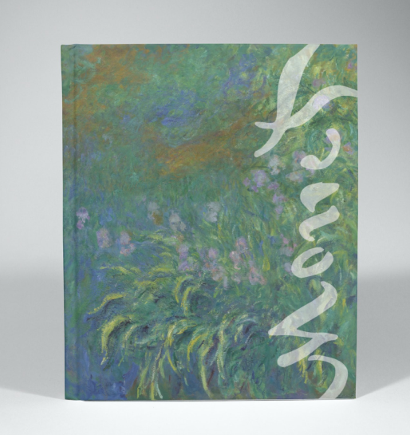
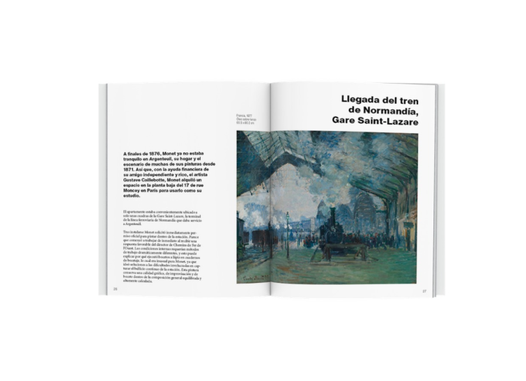

Monet
Obra final C.F.G.M. Asistente al Producto Gráfico Impreso
‘Monet’, guía explicativa
Guía explicativa para la exposición del artista en la Ciudad de las Artes y las Ciencias de Valencia. En esta guía, que también tiene la función de catálogo, se muestran las obras expuestas, acompañadas de información sobre el artista, la etapa en la que se encontraba en el momento de pintar la obra y detalles técnicos de la obra, como sus características, técnicas y materiales.
Además, se crearon los objetos gráficos necesarios para la exposición como el cartel, las entradas y merchandising.

